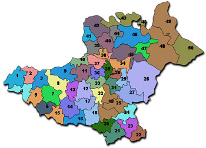
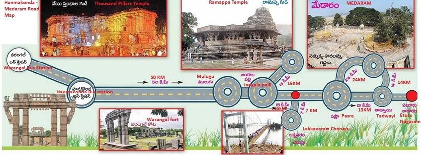
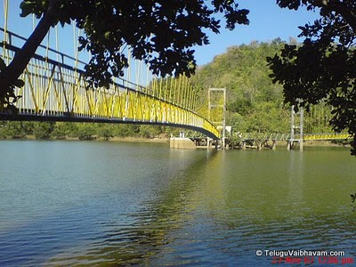

|  | Warangal |  |

Laknavaram Lake, Warangal District, TelanganaLaknavaram Lake or Laknavaram Cheruvu is a popular weekend destination in
the Indian state of Telangana. This lake of natural beauty is the place for kayaking enthusiasts, funky boaters, wildlife discoverers
and nature lovers.
Laknavaram Cheruvu was spotted as the excellent place amidst trees and green hills lined up around to hold the rainwater.
The King Ganapathi Devudu only built a small sluice gate turning the place into a spacious lake which now feeds thousands
of acres of agricultural land every year.
Lakhnavaram Lake or Laknavaram Cheruvu is an idyllic holiday-maker spot of Warangal District in Telangana. It is ensconced
between the huge Govindaraopet Mountains the Laknavaram Lake is sprawled over an area of 10,000 acres. It covers around
thirteen beautiful islands floating in its serene waters, two of which are connected with a hanging bridge. It is an addition by the
Telangana State Tourism Department in its attempt to enhance the value of the place as a weekend tourist destination.
Telangana State Tourism Department has several other plans to make this place as an ideal tourist destination among the
foreign tourists. However, it is also a hot place for picnic. Tourists can enjoy this place while seeking peace and calm.
Located in isolated surroundings, the lake is far away from the hustle and bustle of city life and affords tourists with the peace
of mind they crave for in their everyday urban life.
This beautiful lake with mystic ambience lies within Laknavaram village in Govindaraopet Mandal. This lake is much closer to another Mandal called Mulug. It is at a distance of some 80 kilometres from Warangal District and some 190 kilometres from Hyderabad, which is now the capital city of both Telangana and Andhra Pradesh. The lake was said to have been discovered during the rule of Kakatiya dynasty in South India. It is beautifully wrapped up with thick forest trees with hills, coiled all round. Laknavaram Cheruvu or Laknavaram Lake is spread over some 10,000 acres acts as a water reservoir too.
Laknavaram Lake is around 78 km from Warangal District. It is about 7 km from Govindaraopet and 5 km from Chalvai.
The tourists coming from Warangal District has to take the National Highway 202 road towards Mulugu. After crossing Mulugu,
there will be a drive of 8 kilometres that leads one to Chalvai. This area is covered with thick forests.
The evergreen hills of Govindaraopet lie side by side to form a massive bowl like structure. It holds the spacious, beautiful and
pristine lake popular known as Laknavaram Cheruvu.
9AM - 5PM
5 Hour
70Kms
1. Ramappa Lake (1 Km - details below) can be visited along with this place.
2. Ghanpuram Temples / Kota Gudulu (11 Kms - details below) can be visited along with this place.
Cab / Auto / Bus